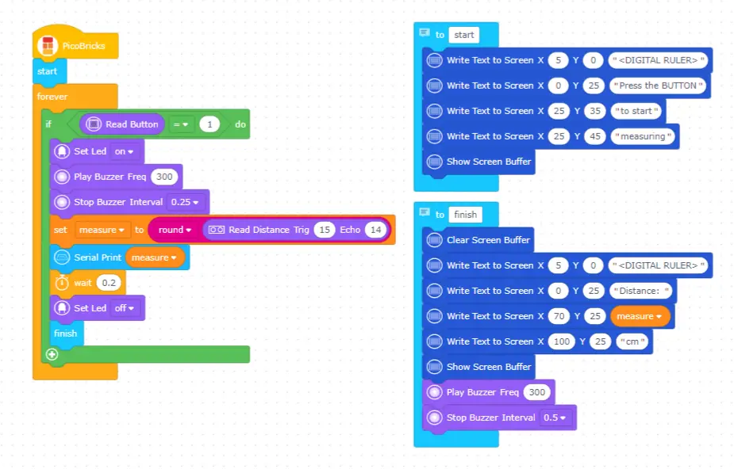

Digital Ruler
In this project, you will learn how to receive and react to a command from the user in your projects by coding the button-LED module of Picobricks.
As Newton explained in his laws of motion, a reaction occurs against every action. Electronic systems receive commands from users and perform their tasks. Usually a keypad, touch screen or a button is used for this job. Electronic devices respond verbally, in writing or visually to inform the user that their task is over and what is going on during the task.
Wiring Diagram

Project Code (Click to Try It)
